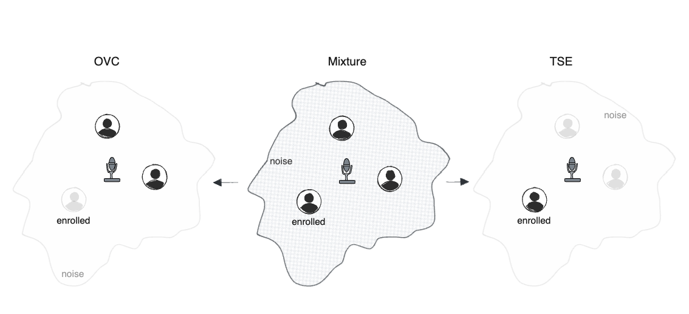

|Paper|
Anonymous author(s)
Anonymous location
We introduce own-voice cancellation (OVC): removing a target (enrolled) speaker from a noisy multi-speaker mixture while preserving any remaining speech. Framed as the complement of target speaker extraction, OVC addresses latency-induced own-voice artifacts that arise when a far-field device streams enhanced audio back to the user, as the round-trip time easily exceeds the perceptual threshold for own-voice distortion. We condition a time-domain model with only 2 ms algorithmic latency on a short enrollment utterance and benchmark TD-SpeakerBeam alongside a lighter Mamba-MinGRU masker built from Mamba blocks with MinGRU temporal mixing. Replacing the ConvTasNet-based auxiliary network with a linear RNN encoder improves both signal-to-distortion ratio and predicted MOS while reducing compute. Results establish OVC as a practical, low-latency enhancement objective for far-field denoising.

+3 dB SNR, 0 dB SIR
+6 dB SNR, 0 dB SIR
+12 dB SNR, 0 dB SIR